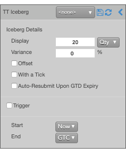
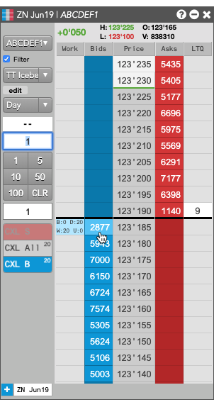
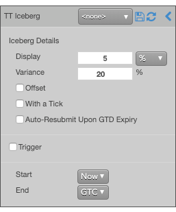
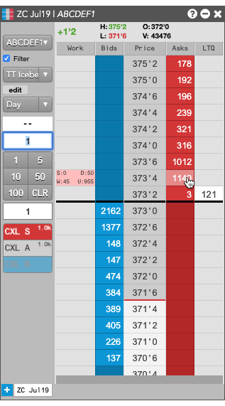
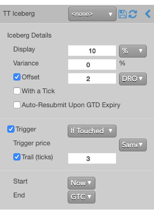
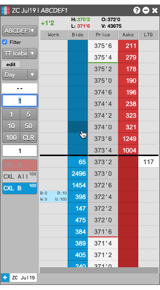

A TT Iceberg order executes a large volume order by breaking it into smaller disclosed orders, publicly displaying only the specified portion instead of the full order quantity. When one disclosed portion fills, the next portion is sent to the market. This process continues until the order is filled.
Examples
The following examples illustrate different ways you can configure a TT Iceberg order and how the order will appear in MD Trader.
Submitting a basic TT Iceberg order
Suppose you want to create an Iceberg order for 200 contracts that submits 20-lot child orders at the same price level as the parent Iceberg order. In this case, you would specify the following TT Iceberg order parameters.

-
From MD Trader or an Order Ticket, set the order quantity to 1000.
-
Select TT Iceberg from the order type dropdown.
-
Set the Display to 20 and select Qty from the Display dropdown to set the child order quantity to 20 contracts.
-
Submit the order at the desired side and price.
If you submitted a Buy order at 123'185, the TT Iceberg parent order would resemble the following:

After the each order is fully filled, the TT Iceberg will submit the next order at 123'185 until the total order quantity has been filled.
Submitting child orders with varying quantities
Suppose you want to create an Iceberg order for 1000 contracts that submits orders for 5% of the total order quantity with a 20% variance (40-60 contracts for this total order quantity). In this case, you would specify the following TT Iceberg order parameters.

-
From MD Trader or an Order Ticket, set the order quantity to 1000.
-
Select TT Iceberg from the order type dropdown.
-
Set the Display to 5 and select % from the Display dropdown to set the base child order quantity to 5% of the total quantity.
-
Set the Variance to 20 % to submit the child orders with quantities between 40 and 60 contracts.
-
Submit the order at the desired side and price.
If you submitted a Sell order at 373'4, the TT Iceberg parent order would resemble the following:

After the each order is fully filled, the TT Iceberg will submit the next order at 373'4 until the total order quantity has been filled.
In addition to adjusting the size of the disclosed quantity you can:
- Adjust the price level at which each disclosed qty is placed.
- Define a trigger condition to begin submitting child orders into the market.
- Set a time and date to start working your TT Iceberg parent order.
Submitting child orders away from the market when a price level is breached
Suppose you want to create an Iceberg order that starts submitting orders when the market reaches or penetrates the price level three ticks away from same-side inside market price when the order is submitted. When the Iceberg parent order starts working, you want it to submit disclosed quatity orders for ten percent of the total quantity at two ticks away from the last order price. In this case, you would specify the following TT Iceberg order parameters.

-
From MD Trader or an Order Ticket, set the order quantity to the desired value.
-
Select TT Iceberg from the order type dropdown.
-
Set the Display to 10 and select % from the Display dropdown to set the base child order quantity to 10%.
-
Set the price of the next child order to two ticks away from the price of the last submitted order:
-
Enable Offset and enter 2 for the number of ticks away.
-
Select DRO from the Offset dropdown to calculate the price of the new child order based on the price of the previous child order.
-
Set the order to start working when the market moves three ticks away from the inside market on the same side as the entry order:
-
Enable Trigger and select If Touched from the dropdown.
-
For the Trigger price, select Same Side from the drop-down.
-
Enable Trail (ticks) and enter 3 to place the order three ticks away from the same-side inside market.
-
Submit the order on the on either side of the market.
If you clicked somewhere on the Buy side, the TT Iceberg parent order would resemble the following.

In addition to adjusting the size of the disclosed quantity you can:
- Adjust the price level at which each disclosed qty is placed.
- Define a trigger condition to begin submitting child orders into the market.
- Set a time and date to start working your TT Iceberg parent order.
TT Iceberg order parameters
Iceberg details parameters
- {% include Parameters/DisplayedQuantity_Details.html%}
- {% include Parameters/Variance_Details.html%}
- {% include Parameters/OffsetTicks_Details_Iceberg.html %}
- {% include Parameters/WithATick.html %}
- {% include Parameters/AutoResubmit_Details.html %}
Trigger parameters
- {% include Parameters/TriggerType_Details.html%}
- {% include Parameters/TriggerPrice_Details.html%}
- {% include Parameters/TrailOffset.html%}
Timing parameters
- {% include Parameters/TimeDate.html %}
- {% include Parameters/StartTime_Details.html %}
- {% include Parameters/EndTime_Details.html %}
- {% include Parameters/EndTimeAction_Details.html %}
- {% include Parameters/DisplayedQuantity_Details.html%}
- {% include Parameters/Variance_Details.html%}
- {% include Parameters/OffsetTicks_Details_Iceberg.html %}
- {% include Parameters/WithATick.html %}
- {% include Parameters/AutoResubmit_Details.html %}
- {% include Parameters/TriggerType_Details.html%}
- {% include Parameters/TriggerPrice_Details.html%}
- {% include Parameters/TrailOffset.html%}
- {% include Parameters/StartTime_Details.html %}
- {% include Parameters/EndTime_Details.html %}
- {% include Parameters/EndTimeAction_Details.html %}